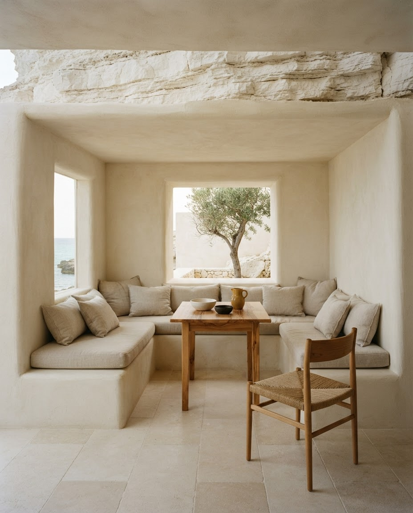
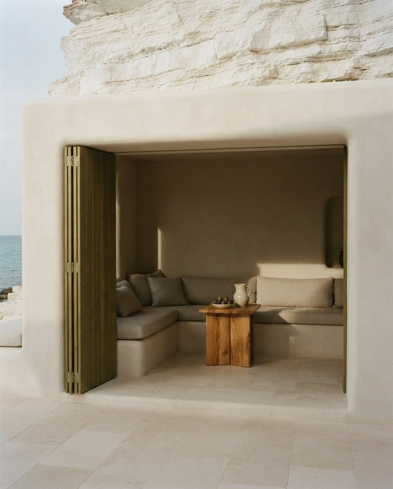
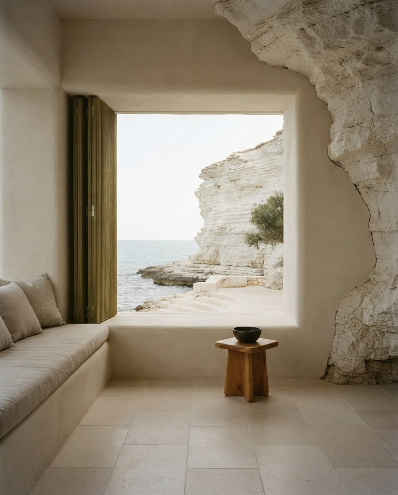
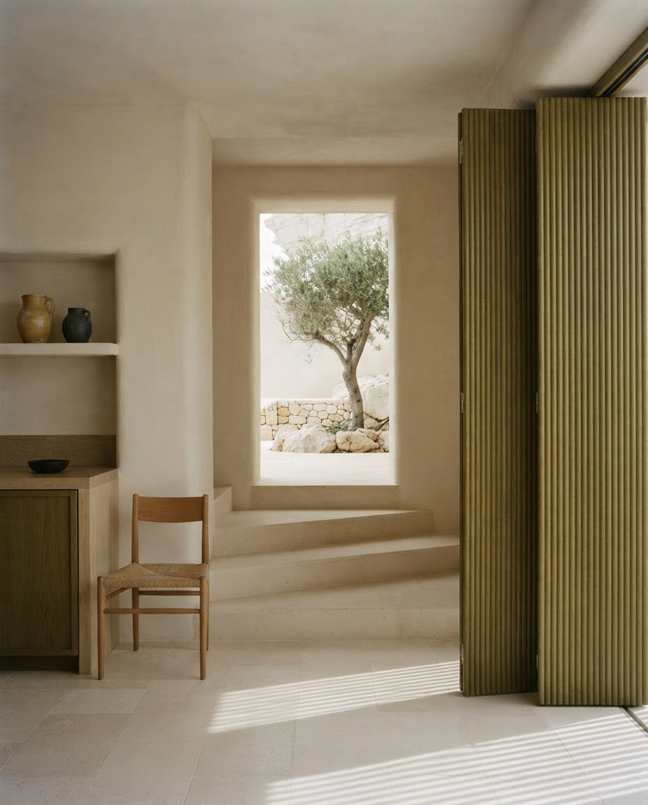
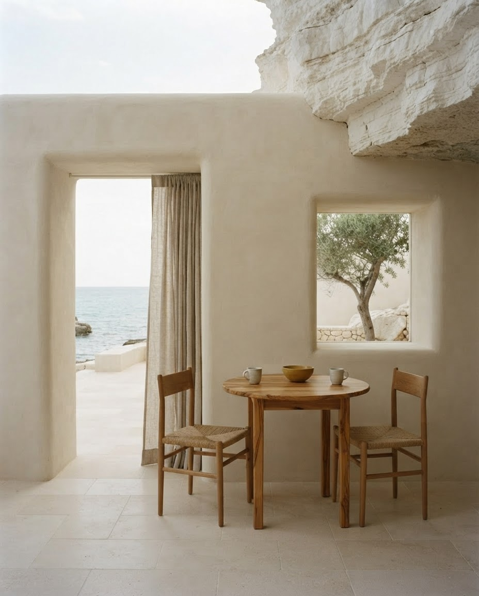

Casa Marna
Where the rock ends and the house begins.
Set into the white marl cliffs of the Sicilian coast, Casa Marna was shaped around the rock rather than against it. The brief was simple: a summer house that feels as if it has always been part of the landscape.
Thick lime-plastered walls follow the curves of the stone and keep the rooms cool through the August heat. Built-in seating replaces most loose furniture, and each opening is placed to frame a single view of the sea. Olive wood from trees on the property brings warmth to the tables and benches. The vessels and tableware throughout were made in our workshop for this house, glazed in the same pale tones as the cliff.





Project Details
-
Project Casa Marna

-
Location Sicily, Italy
-
Type Residence
-
Year 2025
-
Size 160 m²
-
Scope Interior ArchitectureMaterial Selection
-
Materials LimeplasterLocal LimestoneOlive Wood